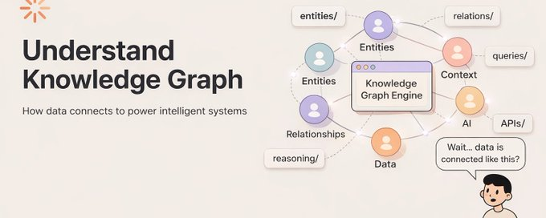

How to Make Knowledge Graphs Blazing Fast
So, you have built a knowledge graph. It has millions of nodes, hundreds of edge types, and a pile of triples that would make any data engineer proud. Then someone asks a perfectly reasonable question, like
"Find all companies that collaborated with Indian AI leaders in the past decade and also built solutions funded by G20 government initiatives." and there we go, the query takes four minutes to return.
That is not a data problem. That is a query problem. And it is the thing this post is about.
I will go through every major class of optimization technique, look at the actual algorithms behind them, understand why each one works, and figure out when to reach for which.
I'm telling you guys one thing, this article is very long and Hopefully you have gone through my last article. If not, I would suggest go through it. Here 👇

Everything Is Connected
I think the title is a bit philosophical. Isn't it?
Don't worry, you will get it at the end. So, imagine a scene: you are standing in a bookshop. You pick up a novel. On the cover it says the author's...
So, let's start...
The Problem Space
KG query is essentially a subgraph matching problem. You describe a pattern, a small graph with some nodes filled in & some left as unknowns, & you ask the system to find all places in the large graph where that pattern appears.
Imagine asking: "Find me a person who KNOWS a person who WORKS_AT an institution that IS_PARTNER_OF a company that PRODUCES a product in the category Food." That is four hops, five node types, and four edge types. For each hop, the system potentially fans out to thousands of matching nodes. By the time you get to hop four, you might be evaluating millions of combinations—most of which will not match, but you still have to check.
Designed by
Here is a simple mental model. Suppose every node in your graph has an average of 50 neighbours (a reasonable assumption for a medium-sized knowledge graph). A 4-hop query without any optimisation visits up to 50^4 = 6.25 million candidate paths.
A 6-hop query?
50^6 = 15.6 billion. Even with fast hardware, brute force simply does not scale.
Indexing Strategies
Before I even get to traversal algorithms, the single most impactful optimization is having the right indexes. A good index turns a scan of millions of triples into a lookup of hundreds. It is boring, unglamorous work. It is also the reason why production graph databases respond in milliseconds instead of minutes.
1. Triple indexing
Remember that every fact in a knowledge graph is a triple: (Subject, Predicate, Object). A naive system stores these in a flat list. Searching for "all triples where the predicate is BORN_IN" means scanning every triple until you find them O(n) time.
The standard solution used by systems like Apache Jena's TDB and Virtuoso is to maintain six sorted indexes, one for each permutation of S, P, and O:
markdown
For every triple (S, P, O), maintain six sorted B-tree indexes:
SPO: sorted by Subject, then Predicate, then Object
SOP: sorted by Subject, then Object, then Predicate
PSO: sorted by Predicate, then Subject, then Object
POS: sorted by Predicate, then Object, then Subject
OSP: sorted by Object, then Subject, then Predicate
OPS: sorted by Object, then Predicate, then Subject
For a query pattern like ( ?x BORN_IN Warsaw ):
1. We know P=BORN_IN and O=Warsaw
2. Pick the POS index
3. Binary-search to (BORN_IN, Warsaw)
4. Read off all matching S values -- O(log n + k) where k = results
The cost: six times the storage. The benefit: any lookup pattern (S known, P known, O known, SP known, PO known, SO known) is served by the correct index with no full scan.2. Bitmap indexes for predicate filtering
When you have a bounded set of predicates (say, 200 distinct relationship types across your graph), a bitmap index is extremely efficient for queries that filter on multiple predicates at once.
Each predicate gets a bitmap, a long sequence of 0s and 1s, where bit i is 1 if node i participates in a triple with that predicate. To find all nodes that are both AUTHOR_OF and WORKS_AT, you AND the two bitmaps. That is a single bitwise operation across the whole graph, and modern CPUs can process 64 bits at a time using SIMD instructions.
3. Adjacency lists and compressed representations
For graph traversal specifically, the most practical index is an adjacency list: for each node, store the list of its neighbors grouped by edge type. When you are at node X and you want to follow the KNOWS edge, you do not scan all triples; you just read X's adjacency list for KNOWS. In large graphs, adjacency lists can be compressed using delta encoding (store differences between consecutive IDs rather than the IDs themselves) and variable-length integer encoding (small IDs use fewer bytes). Systems like RDF-3X and HDT achieve 5-10x compression while keeping lookup times fast.
Graph Traversal Algorithms
Indexes get you to the right place in the graph fast. But once you are there, you still need to navigate, follow edges, explore paths, and find connections. The algorithm you use for that navigation dramatically affects performance, especially on deep or wide queries.
Breadth-First Search (BFS)
BFS is the algorithm you reach for when you want to find the shortest path between two nodes or when you want to explore all nodes within a fixed number of hops. It explores the graph layer by layer, all nodes at distance 1 first, then distance 2, and so on.
Designed by
markdown
BFS(start_node, target_node):
queue = [start_node]
visited = {start_node}
parent = {start_node: null}
while queue is not empty:
current = queue.dequeue()
if current == target_node:
return reconstruct_path(parent, start_node, target_node)
for each neighbour in get_neighbours(current):
if neighbour not in visited:
visited.add(neighbour)
parent[neighbour] = current
queue.enqueue(neighbour)
return null -- no path found- Start a queue with the source node. Mark it as visited.
- Dequeue a node. If it is the target, reconstruct and return the path using the parent map.
- For each unvisited neighbor, mark it visited, record its parent, and enqueue it.
- Repeat until the queue is empty (no path) or the target is found.
In a knowledge graph context, "neighbors" means nodes reachable via a specific edge type. You often filter: only follow KNOWS edges, not all edges. This dramatically reduces the fan-out at each step.
Depth-First Search (DFS)
Its dives deep. It follows one path all the way to the end before backtracking. It uses a stack instead of a queue, and it has much lower memory usage than BFS because it only needs to remember the current path, not the entire frontier.
Designed by
python
DFS(start_node, target_node, max_depth):
stack = [(start_node, 0, [start_node])]
visited = {start_node}
while stack is not empty:
current, depth, path = stack.pop()
if current == target_node:
return path
if depth >= max_depth:
continue -- do not go deeper
for each neighbour in get_neighbours(current):
if neighbour not in visited:
visited.add(neighbour)
stack.push((neighbour, depth+1, path+[neighbour]))
return nullThe max_depth parameter is crucial in knowledge graphs. Without it, DFS can disappear down very long chains. In practice, most queries are bounded: "find paths of length at most 5."
Dijkstra's Shortest Path
BFS works when all edges have equal cost. But in many knowledge graphs, edges carry weights; a relationship might be stronger or weaker, a connection more or less confident, or a route shorter or longer in terms of travel time. Dijkstra's algorithm finds the lowest-cost path in a weighted graph.
python
Dijkstra(graph, start, target):
dist = {node: Infinity for all nodes}
dist[start] = 0
pq = MinPriorityQueue() ## keyed by dist
pq.insert(start, priority=0)
prev = {}
while pq is not empty:
current, cost = pq.extract_min()
if current == target:
return reconstruct_path(prev, start, target)
for each (neighbour, edge_weight) in get_neighbours(current):
new_cost = dist[current] + edge_weight
if new_cost < dist[neighbour]:
dist[neighbour] = new_cost
prev[neighbour] = current
pq.insert_or_update(neighbour, priority=new_cost)
return null ## no path found- Initialize all distances to infinity and the source to 0. Use a min-priority queue ordered by distance.
- Always expand the cheapest known node: this is the key invariant. A cheaper path to that node cannot arrive later.
- Relax edges: if going through the current node to a neighbor is cheaper than what we knew before, update the distance and re-insert into the queue.
- Stop when you extract the target from the queue; at that point, you have its optimal cost.
The min-priority queue (typically a binary heap or a Fibonacci heap) is what makes Dijkstra efficient. Extracting the minimum and updating priorities are O(log V) operations.
A* Search: Dijkstra with a Map
Dijkstra is optimal, but it explores in all directions equally. If you have any idea where your target is, a heuristic estimate of how far away it is can be made. You can guide the search toward the target and skip a lot of exploration. That is exactly what A* does.
Instead of ordering the priority queue purely by cost so far, A* orders it by cost so far + estimated cost to target. The estimated part is the heuristic h(n).
python
A_star(graph, start, target, heuristic):
g_cost = {start: 0} # actual cost from start
f_cost = {start: heuristic(start, target)} # g + h
pq = MinPriorityQueue()
pq.insert(start, priority=f_cost[start])
prev = {}
while pq is not empty:
current, _ = pq.extract_min()
if current == target:
return reconstruct_path(prev, start, target)
for each (neighbour, edge_weight) in get_neighbours(current):
tentative_g = g_cost[current] + edge_weight
if tentative_g < g_cost.get(neighbour, Infinity):
prev[neighbour] = current
g_cost[neighbour] = tentative_g
f_cost[neighbour] = tentative_g + heuristic(neighbour, target)
pq.insert_or_update(neighbour, priority=f_cost[neighbour])
return nullThe magic is the heuristic function. In a knowledge graph, good heuristics include ontological distance (how many class-level hops separate these types?), embedding distance (how far apart are the node vectors in embedding space?), or domain-specific proximity scores.
A* is only guaranteed to find the optimal path if the heuristic is admissible—it never overestimates the true cost. An admissible heuristic that is also as accurate as possible makes A* dramatically faster than Dijkstra on real graphs.
Bidirectional Search
Here is a beautiful idea: instead of searching from the source toward the target, search from both ends simultaneously. Stop when the two frontiers meet in the middle. This turns a search over a sphere of radius d (the full path length) into two searches over spheres of radius d/2.
The savings are enormous. If each node has k neighbors, a one-directional BFS visits roughly k^d nodes. Bidirectional BFS visits 2 * k^(d/2).
For k=50 and d=6, one-directional visits are 15.6 billion nodes; bidirectional visits are 2 * 50^3 = 250,000. That is a reduction of four orders of magnitude.
python
Bidirectional_BFS(graph, start, target):
frontier_s = {start} # forward frontier (from start)
frontier_t = {target} # backward frontier (from target)
visited_s = {start: null} # node -> parent from start side
visited_t = {target: null} # node -> parent from target side
while frontier_s and frontier_t are not empty:
-- Always expand the smaller frontier (keeps search balanced)
if len(frontier_s) <= len(frontier_t):
next_s = {}
for each node in frontier_s:
for each neighbour in get_neighbours(node):
if neighbour not in visited_s:
visited_s[neighbour] = node
next_s.add(neighbour)
if neighbour in visited_t:
return merge_paths(visited_s, visited_t, neighbour)
frontier_s = next_s
else:
# expand frontier_t symmetrically
...
return nullExpanding the smaller frontier each time keeps the two searches balanced, which minimizes the total work. Meeting-point detection: whenever a node appears in both visited sets, we have found a path. We can then reconstruct it by stitching together the forward path from the start to the meeting point and the backward path from the meeting point to the target.
Query Planning and Join Ordering
A SPARQL or Cypher query is not just a traversal. It is a set of pattern constraints that the engine must satisfy simultaneously. "Find a person who KNOWS a Scientist who WORKS_AT an institution in Germany" translates internally to joining several triple patterns together. The order you evaluate these joins can make a query run in 50 milliseconds or 50 minutes.
Suppose your query has four triple patterns: A, B, C, and D. There are 4! = 24 possible orderings. With 10 patterns, there are 3.6 million orderings. The query planner's job is to find the best one — or at least a good one — without trying all of them.
The guiding principle is simple: evaluate the most selective patterns first. A selective pattern is one that matches very few triples. If pattern A matches 12 triples and pattern B matches 2 million, do A first — it produces a tiny intermediate result that makes B much cheaper to evaluate.
Designed by
Cardinality estimation
To order joins well, the query planner needs to know how many results each pattern will produce before actually running it. This is called cardinality estimation, and it is famously hard to get exactly right.
Common techniques used in graph databases include:
- Predicate statistics: Store the count of triples for each (Predicate, Object) pair at index build time. Estimating "how many ?x BORN_IN Warsaw triples exist?" is a direct lookup: O(1).
- Characteristic sets: Group entities by the set of predicates they participate in. Nodes that are both AUTHOR_OF and AFFILIATED_WITH can be counted precisely. This handles correlated predicates better than treating them independently.
- Sampling: Run the query on a 1% sample of the graph, multiply by 100. Fast and surprisingly accurate on uniform distributions. Breaks down on skewed graphs where important nodes have vastly more edges than average.
Leapfrog Triejoin
This is an elegant algorithm worth knowing by name. Developed at LogicBlox and described in a 2014 paper by Todd Veldhuizen, Leapfrog Triejoin is a worst-case-optimal join algorithm, meaning it is never worse than the theoretical minimum number of operations required for any possible join, no matter what the data looks like.
python
## Join: ?x KNOWS ?y AND ?y WORKS_AT ?z AND ?z IN_COUNTRY Germany
## Each iterator is positioned at a value; it can move to the next
## value >= a given target ("seek").
Leapfrog_Join(iterators, variable_order):
for each variable v in variable_order:
iterators_for_v = iterators.filter(contains v)
## Find the minimum and maximum current values across iterators
min_val = min(it.current() for it in iterators_for_v)
max_val = max(it.current() for it in iterators_for_v)
while min_val != max_val:
## The iterator with min_val cannot contribute to any join result.
## "Leap" it forward to seek max_val.
lagging_it.seek(max_val)
min_val = lagging_it.current() ## may have advanced past max
max_val = new_max(iterators_for_v)
if all iterators agree on a value:
recurse(next variable, bind current value)
advance all iterators to next valueThe beauty is instead of generating cross-products and filtering, it skips directly over values that cannot participate in any valid join result. No wasted iterations. Each "seek" operation on a sorted trie is O(log n).
Caching and Materialization
Sometimes the fastest query is the one you already ran. Caching and materialization are both strategies for pre-computing results so that repeated or similar queries are served instantly.
Subgraph caching
A subgraph cache stores the results of recent or common queries in memory. When a new query arrives, the engine checks whether any previously computed subgraph can partially answer it. This is more nuanced than simple key-value caching because graph queries can partially overlap.
Suppose query A recently asked for "all institutions in Germany" and produced a set of 400 nodes. Query B now asks for "all institutions in Germany that have more than 1000 students." Query B's result is a subset of A's result. A smart cache can use A's result set as the starting point for B, evaluating only the additional constraint.
Materialized views
A materialized view is a precomputed query result that is stored persistently and kept up to date as the graph changes. It is different from a cache: a cache is opportunistic (we store results of queries that happened to run), while a materialized view is deliberate (we decide in advance which query results to precompute).
Common patterns worth materializing in knowledge graphs:
- Transitive closurePrecompute all (ancestor, descendant) pairs for a hierarchy (IS_A, PART_OF, etc.). Instead of traversing the hierarchy at query time, a direct lookup gives all ancestors instantly.
- Neighbourhood summariesFor each node, precompute: how many edges of each type, what types of nodes are adjacent. This turns expensive neighbourhood queries into index lookups.
- Inference resultsIf your ontology derives many inferred triples, store those inferred triples explicitly rather than re-deriving them at query time. This is called "forward chaining" or "materializing the closure."
Approximate Methods
Not every query needs an exact answer. Sometimes "roughly right in 20 milliseconds" beats "exactly right in 20 minutes." Approximate methods trade a little accuracy for a lot of speed. They are more useful than they sound — especially for exploratory queries, recommendations, and similarity searches.
Graph sampling
Instead of querying the full graph, sample a representative subgraph and query that. The result is approximate but statistically consistent — if you want "how many Person nodes have more than 100 KNOWS edges," a 5% sample gives you an answer within a few percent of the truth, in a fraction of the time.
The tricky part is choosing a good sampling strategy. Simple random sampling of nodes does poorly on graph problems because it breaks the connectivity structure. Better strategies include:
- Random walk samplingStart from a random node, follow a random edge, repeat. The resulting sample preserves the degree distribution and local structure of the graph better than pure random sampling.
- Forest fire samplingFrom a seed node, "burn" outward with some probability p, like a fire spreading to neighbouring trees. Creates a compact, connected sample that captures community structure.
Knowledge graph embeddings for fast similarity lookup
This is one of the most active areas in the field right now. The idea: train a model to represent every entity and every relation as a vector in a high-dimensional space (typically 100–500 dimensions), such that the geometric relationships between vectors reflect the logical relationships in the graph.
The most famous embedding model is TransE, which works on a beautifully simple idea: for a valid triple (head, relation, tail), the embedding of head + the embedding of relation should be approximately equal to the embedding of tail.
python
## Score function: how plausible is a triple (h, r, t)?
score(h, r, t) = -|| embed(h) + embed(r) - embed(t) ||
## Training: for each true triple, make corrupted (false) triples
## and push the score of true triples higher than corrupted ones
train(triples, epochs):
for epoch in range(epochs):
for (h, r, t) in shuffle(triples):
corrupted = corrupt(h, r, t) ## replace h or t randomly
loss = margin_loss(
score(h, r, t),
score(*corrupted),
margin=1.0
)
gradient_step(loss)
## At query time: find the k nearest entities to (h + r)
query(h, r, k):
target_vec = embed(h) + embed(r)
return k_nearest_neighbours(target_vec, all_entity_embeddings)Once trained, answering "what is the likely tail of (Paris, CAPITAL_OF, ?)" is a nearest-neighbour lookup in vector space — a matter of a few milliseconds even over millions of entities. Approximate nearest-neighbour libraries like FAISS make this scale to billions.
Bloom filters for existence checks
A Bloom filter is a probabilistic data structure that answers "does this element exist?" in O(1) time and O(1) space (relative to the data size). It has a tunable false-positive rate but zero false negatives, if it says something does not exist, it definitely does not.
In knowledge graph query engines, Bloom filters are used to skip joins early. Before looking up whether node X has any LOCATED_IN edges, check the Bloom filter. If the filter says no, skip the lookup entirely, X definitely has no LOCATED_IN edges. If it says yes (possibly a false positive), do the actual lookup. This eliminates a large fraction of expensive index lookups on sparse predicates.
Distributed Graph Querying
At some point, your knowledge graph does not fit on one machine. Google's Knowledge Graph does not. The Bio2RDF biomedical graph does not. When you hit that scale, the problem becomes not just how to execute one query fast, but how to coordinate query execution across tens or hundreds of machines.
Graph partitioning
The first decision is how to split the graph across machines. This is the graph partitioning problem, and the wrong choice makes distributed queries catastrophically slow.
- Hash partitioningAssign each triple to a machine based on a hash of the subject (or object, or predicate). Simple and balanced, but queries that involve two nodes on different machines require a network round-trip. High network traffic on traversal queries.
- Community-based partitioningUse a graph clustering algorithm (like METIS, or the Louvain method) to find communities of densely connected nodes. Keep each community on the same machine. Queries that stay within a community need no network communication. The challenge: some queries span communities regardless.
- Predicate-based partitioningAssign all triples of a given predicate type to the same machine. "All KNOWS triples live on machine 3, all WORKS_AT triples live on machine 7." Makes single-predicate queries fast. Multi-predicate joins require a shuffle phase between machines.
Federated SPARQL
A slightly different distributed scenario: you do not own all the graphs. You want to query across Wikidata, DBpedia, and your own internal graph simultaneously. Federated SPARQL (defined in the SPARQL 1.1 standard) lets you do this. You write one query with SERVICE directives pointing to different SPARQL endpoints, and the federation engine coordinates the sub-queries.
The optimizer's job in federated queries is to decide what to send where, and in what order. A good optimizer sends the most selective sub-queries first, uses the intermediate results to reduce what it asks the other endpoints, and minimises the number of cross-endpoint round trips. A bad optimizer sends everything to everyone and assembles the join locally — which is exactly as slow as it sounds.
Final thoughts
Optimizing knowledge graph queries isn’t about throwing more hardware at the problem, it’s about being smarter with how you search and structure data. From indexing to traversal algorithms, every layer plays a role in controlling that exponential explosion.
The real win comes from combining techniques good indexes, smart query planning, and the right algorithm for the job. Sometimes, even approximate answers can unlock massive speed gains without hurting usefulness.
At scale, efficiency becomes the difference between a system that feels instant and one that feels broken.
In the end, great graph systems are not just about data they’re about how intelligently you navigate it.
Resources Followed
Books
- Graph Databases: Ian Robinson, Jim Webber, Emil Eifrem from O'Reilly
- Knowledge Graphs: Fundamentals, Techniques, and Applications: Mayank Kejriwal, Craig Knoblock, Pedro Szekely from MIT Press
Online resources
- Wikidata Query Service:
- BSBM and LUBM Benchmarks: Standard KG query benchmarks
- PyKEEN:
Want to publish your own Article?
Upgrade to Premium